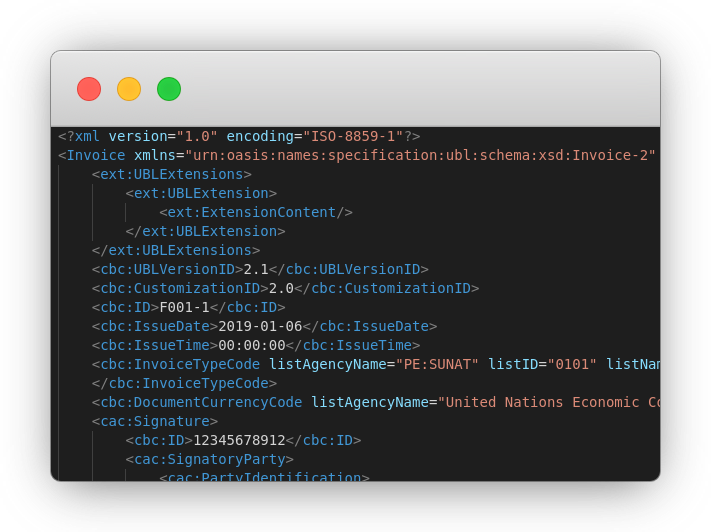

Facturación electrónica
Open Source
Hecho por desarrolladores, para desarrolladores. Incrementa tu productividad sin reinventar la rueda una y mil veces
DocsChatea con nosotros

Microservicios
Integra tu software sin importar el lenguaje de programación que uses.
Librerias Java
Importa las librerias Java en tu propio software, sin importar las características de tu software (Desktop, Web, etc.). Solo necesitas utilizar Maven o Gradle.